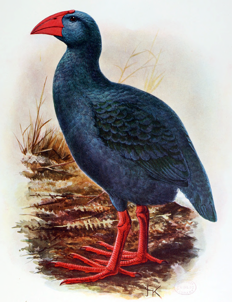

Porphyrio coerulescens é uma espécie hipotética extinta de ave da família dos ralídeos, endêmica da ilha da Reunião, uma ilha no Oceano Índico a leste de Madagascar. Embora conhecida apenas a partir dos relatos de visitantes da ilha dos séculos XVII e XVIII, foi cientificamente nomeada em 1848, com base na descrição de 1674 de Sieur Dubois. Uma considerável literatura foi subsequentemente dedicada às suas possíveis afinidades evolutivas, e os pesquisadores atuais concordam na sua classificação no gênero Porphyrio. É considerada misteriosa e enigmática devido à falta de qualquer evidência física de sua existência. Esta ave foi descrita como de plumagem inteiramente azul, com o bico e pernas vermelhos. Dizia-se que era do tamanho de um íbis-terrestre-de-reunião ou de uma galinha, o que equivale a 65 a 70 cm de comprimento, e pode ter tido uma aparência semelhante a do takahe. Apesar de ser de fácil captura, era um corredor rápido e capaz de voar, embora o fizesse com relutância. Pode ter se alimentado de matéria vegetal e invertebrados, como outros caimões, e nidificava entre gramíneas e samambaias aquáticas. Era encontrado apenas no planalto de Plaine des Cafres, para o qual pode ter se abrigado durante os últimos anos de sua existência, enquanto outros caimões habitam pântanos de planícies. Embora o último relato inequívoco seja de 1730, a espécie pode ter sobrevivido até 1763, mas a caça excessiva e a introdução de gatos provavelmente a levaram à extinção.
 Voltar